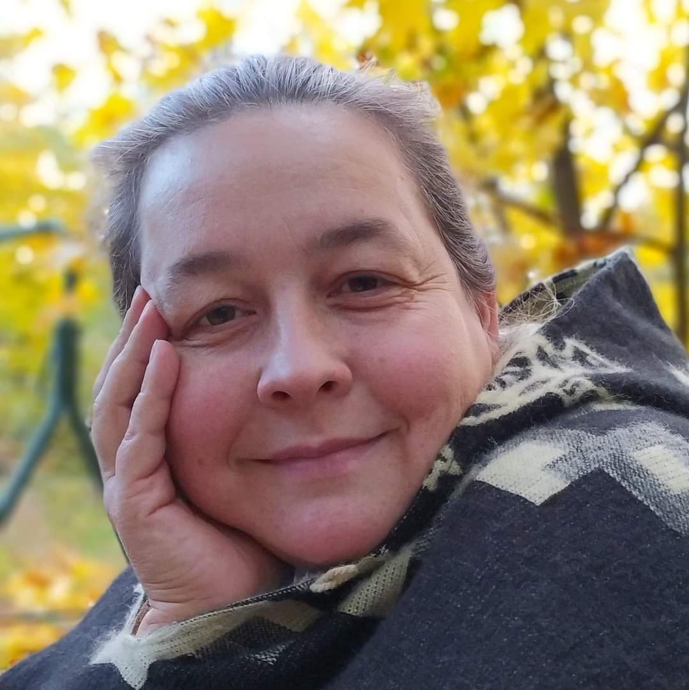
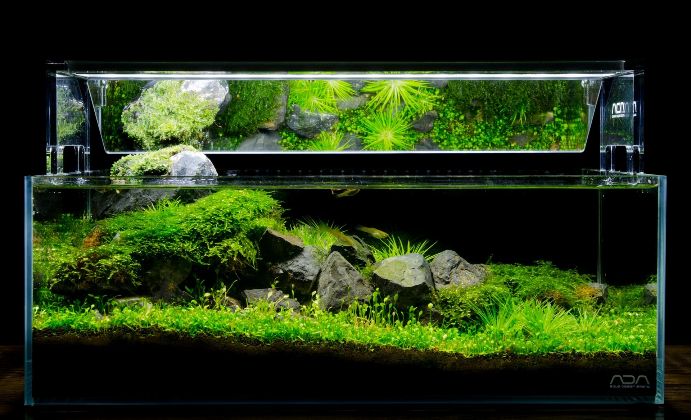

|  |
KontaktyVodová 123 E-mail: helena@cutecube.cz můj web www.cutecube.cz |


Reference
| Kateřina Molucká realizace kaskádového krevetária 777 888 999 kreveta@filtrujicikrevety.cz |
Klára Gabonská realizace a servis Sulawesi šnekária 444 555 666 ostruvek@fsudesamejsnek.cz |
Janek Divoký realizace akvária 2000L 333 222 111 louze@faktvelkalouze.cz |
Technické dovednosti
- Aquascaping
- Paludaria DOOA
- Wabi-kusa
- Akvaristika HI-TECH
- Akvaristika LOW-TECH
- Malawi, Orinoco, Amazonas a Sulawesi
Pracovní zkušenosti
| 2011-současnost | CuteCube.cz Provoz vlastní společnosti realizace akvárií a pořádání Aqua workshopů |
| 2004-2011 | Aqua tandem.sro - Návrhy a realizace akvárií |
| 2000-2004 | Technická podpora v realizačním tmu IIAC (Tchaj-wan) mezinárodní soutěž Aquascaping |
| 1996-1997 | Stážista v pěstírně aqua rostlin Cute PLANTS pro Rostliny In-Vitro |
| 1994-1996 | Stážista ve výrobě akvárí Juwel Aquarium ve městě Rotemburgu v německém Dolním Sasku |
Vzdělání
| 2011 | DiS. Vizuální média obor: Prostorová projekce |
| 2005 | Universita AQUARISTICKÝCH studií Vodňany |
| 2001 | UMPRUM Praha |
Účast na soutežích
Soutěž v aquascapingu - živé soutěže
| 2022 | Americká AGA Contest IAPLC2022 WORLD RANKINGS -The International Aquatic Plants Layout Contest | přehraj záznam ze soutěže | |
| 2021 | Japonská IAPLC IAPLC2021 WORLD RANKINGS -The International Aquatic Plants Layout Contest | přehraj záznam ze soutěže | |
| 2020 | IAPLC2020 WORLD RANKINGS -The International Aquatic Plants Layout Contest | přehraj záznam ze soutěže |
Můj soutěžní rank 344
| IAPLC 2022 | FOUR CONNECTIONS Rank 344 | Step by Step 100x50x50 | soutěžní rank 344 krok za krokem |
